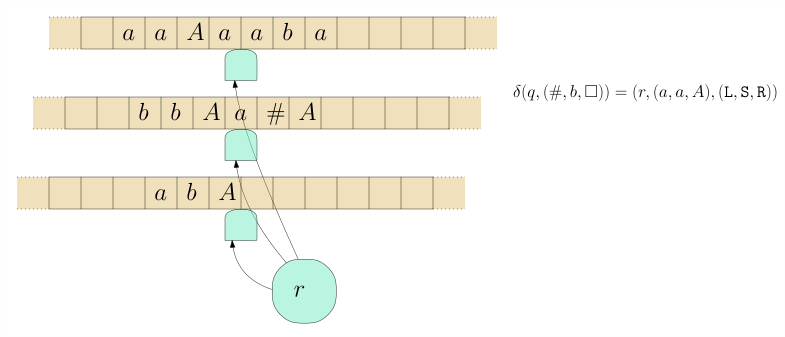
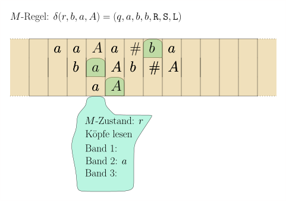
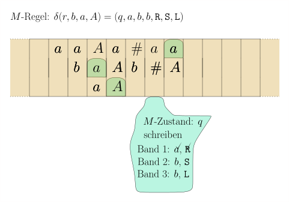

import Section from "~/components/Section";
import Paragraph from "~/components/Paragraph";
import Container from "~/components/Container";
import Carousel from "~/components/Carousel";
import NumberedTitle from "~/components/NumberedTitle";
const Article = () => {
  return (
    <Container>
      <Section
        count={44}
        title_gr="Variationen: Mehrband-Maschinen, nichtdeterministische Maschinen"
        title_en="Turing variants"
        number={7.3}
        counter="DefCtr"
        counter="ExoCtr"
        path="/lecture-notes44.tsx">
        <div id="link-to-toc">
          <a href="../vorlesungsskript">
            Inhaltsverzeichnis
          </a>
          <a href="07-02-Turing-machines-examples">
            &lt;&lt; Kapitel 7.2
          </a>
        </div>
        <div
          id="link-to-overview"
          style="text-align: end">
          <a href="/">
            zur Kursübersicht
          </a>
          <a href="07-04-Turing-encoding">
            Kapitel 7.4 &gt;&gt;
          </a>
        </div>
        <div id="rightSideWrapper">
          <div class="content">
            <div class="chapter">
              <div class="subChapter">
                <h1 class="hidden-title">
                  <span class="subChapterTitle">
                    7.3 
                    Variationen: Mehrband-Maschinen, nichtdeterministische Maschinen
                  </span>
                </h1>
                <h2>
                  Turingmaschinen mit mehreren Bändern
                </h2>
                <Paragraph>
                  Im letzten Teilkapitel ist Ihnen bestimmt aufgefallen, dass es
                  auffallend lästig ist, selbst für einfache Sprachen wie $$\begin&#123;align*&#125;
                  \&#123;a^n b^n c^n \ | \ n \geq 0 \&#125; \end&#123;align*&#125;$$ oder $$\begin&#123;align*&#125; \&#123;wcw
                  \ | \ w \in \&#123;a,b\&#125;^*\&#125; \end&#123;align*&#125;$$ Turingmaschinen zu programmieren.
                  Ein Grund dafür ist, dass die Maschine nur an einer Position des
                  Bandes lesen und schreiben kann und man deswegen ständig zwischen
                  verschiedenen Stellen hin- und herfahren muss. Es bietet sich daher
                  an, an etwas allgemeineres Modell einer Rechenmaschine zu definieren,
                  das dann auch leichter zu programmieren ist. Dies ist die
                  <i>
                    Mehrband-Turingmaschine
                  </i>
                  .
                </Paragraph>
                <Paragraph>
                  Eine Mehrband-Turingmaschine ist wie eine Turingmaschine, nur dass sie
                  statt einem \(k\) viele Bänder und somit auch \(k\) viele
                  Schreib-Lese-Köpfe hat. Die Zustandsübergangsfunktion \(\delta\) hat
                  somit auch die Signatur $$\begin&#123;align*&#125; \delta : Q \times \Gamma^k
                  \rightarrow Q \times \Gamma^k \times \lsr^k \end&#123;align*&#125;$$
                </Paragraph>
                <figure class="centered-figure well container">
                  <Carousel>
                    
                    
                    
                    
                    
                  </Carousel>
                </figure>
                <div class="well container theorem">
                  <span class="numbered-title">
                    Beispiel
                    <NumberedTitle>
                      &ensp;7.3.1{" "}
                    </NumberedTitle>
                  </span>
                  Entwerfen wir nun eine Turingmaschine für die Palindromsprache
                  $$\begin&#123;align*&#125; L := \&#123; w \in \&#123;a,b\&#125;^* \ | \ w = w^R \&#125; \ ,
                  \end&#123;align*&#125;$$ In
                  <a href="./04-01-Turing-machines-examples#example-palindromes">
                    &ensp;Beispiel 4.2.2{" "}
                  </a>
                  haben wir dafür eine Einband-Turingmaschine geschrieben. Deren
                  Nachteil war, dass sie ständig zwischen dem linken und rechten Rand
                  hin-und-herlaufen musste.
                  <Paragraph>
                    Bauen wir nun eine Mehrband-Turingmaschine. Diese arbeitet in drei
                    einfachen und kurzen Phasen:
                  </Paragraph>
                  <ol>
                    <li>
                      <tt>
                        copy
                      </tt>
                      : kopiert das \(w\) auf das zweite Band
                    </li>
                    <li>
                      <tt>
                        rewind
                      </tt>
                      : bewegt den Kopf des ersten Bandes zurück zum
                      Anfang
                    </li>
                    <li>
                      <tt>
                        compare
                      </tt>
                      : schaut, ob erstes und zweites Band den gleichen
                      Inhalt haben.
                    </li>
                  </ol>
                  Den "Quelltext" für
                  <a href="https://turingmachinesimulator.com">
                    &ensp;turingmachinesimulator.com{" "}
                  </a>
                  finden Sie in
                  <a href="../code/turing machines/palindrome-multiple-tapes.txt">
                    &ensp;palindrome-multiple-tapes.txt{" "}
                  </a>
                  .
                </div>
                <div class="well well-lg numbered-exercise container">
                  <span class="numbered-title">
                    Übungsaufgabe
                    <NumberedTitle>
                      &ensp;7.3.1{" "}
                    </NumberedTitle>
                  </span>
                  Schreiben Sie eine Mehrband-Turingmaschine, die Binärzahlen addiert.
                  Wenn also beispielsweise{" "}
                  <tt>
                    1010+110
                  </tt>
                  &ensp;auf dem ersten Band
                  (Eingabeband) steht, dann soll nach Abschluss der Berechnung das
                  Ergebnis auf dem Ausgabeband stehen, also{" "}
                  <tt>
                    10000
                  </tt>
                  .
                  <Paragraph>
                    {" "}{" "}
                    <b>
                      Tip.
                    </b>
                    {" "}Verwenden Sie drei Bänder. Sei der Bandinhalt
                    \(x+y\). In einer ersten Phase kopieren Sie \(x\) auf das zweite
                    Band. In der nächsten Phase gehen Sie ans Ende von \(y\). Dann
                    addieren Sie nach den Regeln der Binäraddition. Ob "1 gemerkt" gilt
                    oder nicht, können Sie in Ihrem internen Zustand speichern. Eine
                    Regel wäre also zum Beispiel:
                  </Paragraph>
                  <pre>
                    carry1, 0, 0, _
                    carry0, 0, 0, 1,&lt;,&lt;,&lt;
                    carry1, 0, 1, _
                    carry1, 0, 1, 0,&lt;,&lt;,&lt;
                  </pre>
                  <Paragraph>
                    Ein lästiges Detail ist, dass \(y\) kürzer sein könnte als \(x\) und
                    Sie daher in das{" "}
                    <tt>
                      +
                    </tt>
                    &ensp;reinlaufen könnten; wenn \(x\) kürzer
                    ist als \(y\), dann könnten Sie auf dem zweiten Band in ein
                    \(\square\) reinlaufen. Wie ist dieser Fall zu behandeln?
                  </Paragraph>
                </div>
                <Paragraph>
                  {" "}{" "}
                  <b>
                    Berechnete Sprache, berechnete Funktion.
                  </b>
                  Die Begriffe des Akzpetierens und Ablehnens definieren wir genau wie
                  für die Einband-Turingmaschinen. Eine formale Definition der
                  Konfiguration ersparen wir uns jedoch. Wenn unsere
                  Mehrband-Turingmaschine nicht nur akzeptieren / ablehnen, sondern
                  etwas
                  <i>
                    berechnen
                  </i>
                  {" "}soll, also eine Funktion $$\begin&#123;align*&#125; f :
                  \Sigma_1 \rightarrow \Sigma_2 \ , \end&#123;align*&#125;$$ dann bauen wir sie per
                  Konvention so, dass sie ein designiertes Ausgabeband hat, auf dem nach
                  Abschluss der Berechnung das Ausgabewort \(f(x)\) steht.
                </Paragraph>
                <h2>
                  Einband-Maschinen können Mehrband-Maschinen simulieren
                </h2>
                <Paragraph>
                  Es stellt sich heraus, dass mehrere Bänder zwar ein praktisches
                  Feature sind, aber nicht wirklich mehr Ausdruckskraft verlangen; was
                  eine Mehrband-Turingmaschine schafft, schafft eine
                  Einband-Turingmaschine auch.
                </Paragraph>
                <div class="well container theorem">
                  <span class="numbered-title">
                    Theorem
                    <NumberedTitle>
                      &ensp;7.3.2{" "}
                    </NumberedTitle>
                  </span>
                  {" "}{" "}
                  <b>
                    (Einband-Turingmaschine simuliert Mehrband-Turingmaschine)
                  </b>
                  . Sei \(M\) eine Turingmaschine mit \(k\) Bändern, wovon eines ein
                  designiertes Ausgabeband ist. Dann gibt es eine Einband-Turingmaschine
                  \(M'\) mit folgenden Eigenschaften:
                  <ol>
                    <li>
                      \(M'(x)\) akzeptiert/lehnt ab/terminiert nicht genau dann, wenn
                      \(M(x)\) akzeptiert/ablehnt/nicht terminiert.
                    </li>
                    <li>
                      Wenn \(M(x)\) akzeptiert und \(y\) der Bandinhalt des
                      Ausgabebandes ist, dann akzeptiert \(M'(x)\) auch, und der
                      Bandinhalt (des einzigen Bandes, es gibt ja nur eins) ist \(y\).
                    </li>
                  </ol>
                  <Paragraph>
                    In anderen Worten: \(M'\) simuliert \(M\).
                  </Paragraph>
                </div>
                <div class="well container">
                  {" "}{" "}
                  <b>
                    Beweis.
                  </b>
                  Der erste Trick ist, dass wir die \(k\) Bänder von \(M\)
                  "zusammenkleben" in ein neues Band, in welcher jede Zelle \(k\)
                  Symbole enthalten kann:
                  <figure>
                    
                  </figure>
                  Das Problem sind nun die Köpfe. Wenn wir diese Idee naiv umsetzen
                  würden, hätte unsere Maschine \(M'\) zwar ein Band, dafür drei Köpfe
                  auf diesem:
                  <figure>
                    
                  </figure>
                  <Paragraph>
                    Wir lösen dies, indem wir die Kopfpositionen in das Band selbst
                    reinschreiben:
                  </Paragraph>
                  <figure>
                    
                  </figure>
                  <Paragraph>
                    Das neue Bandalphabet ist also nicht \(\Gamma^k\) sondern \((\Gamma
                    \times \&#123;\texttt&#123;head&#125;, \texttt&#123;nohead&#125;\&#125; )^k\). Wo steht nun aber
                    denn der Kopf von \(M'\)? Jetzt kommt der schwierige Teil: um
                    <i>
                      einen
                    </i>
                    {" "}Schritt von \(M\) zu simulieren, muss \(M'\) von ganz
                    links nach ganz rechts laufen und alle Informationen über die \(k\)
                    \(M\)-Köpfe sammeln. Dann von rechts nach links gehen und die
                    ausführen.
                    <figure class="centered-figure well container">
                      <Carousel>
                        
                        
                        
                        
                        
                        
                        
                        
                        
                        
                        
                        
                        
                        
                        
                        
                        
                        
                        
                        
                      </Carousel>
                    </figure>
                    Wir müssen also die Zustandsmenge deutlich erweitern; so muss sie
                    speichern können, ob wir ein Symbol bereits gelesen haben; ob wir
                    ein Symbol bereits geschrieben haben und ob wir den Kopf bereits
                    entsprechend verschoben haben. Für eine Rechtsverschiebung müssen
                    wir uns zusätzlich noch merken, dass wir sie gerade durchführen und
                    für welches Band. All dies ist viel, aber immer noch endlich. Wir
                    können alles in einer endlichen Zustandsmenge \(Q'\) speichern.
                  </Paragraph>
                  <Paragraph>
                    Wenn der \(M\)-Zustand (der natürlich auch im \(M'\)-Zustand
                    gespeichert ist),
                    <tt>
                      accept
                    </tt>
                    erreicht hat, dann macht \(M'\) noch eine Aufräumphase, in welcher
                    sie alle Symbole, die nicht zum Ausgabeband gehören, durch
                    \(\square\) ersetzt. Dann wechselt sie in ihren eigenen
                    akzeptierenden Zustand{" "}
                    <tt>
                      accept'
                    </tt>
                    .
                  </Paragraph>
                  <span class="qed">
                    \(\square\)
                  </span>
                </div>
                <h2>
                  Einfügen versus Überschreiben
                </h2>
                Folgende Aufgabe ist auf einer Einband-Turingmaschine sehr leicht:
                gegeben ein Eingabewort \(w \in \&#123;a,b\&#125;^*\), ersetze jedes \(b\) durch
                ein \(c\). In der Syntax von
                <a href="https://turingmachinesimulator.com">
                  &ensp;turingmachinesimulator.com{" "}
                </a>
                :
                <pre class="listing container">
                  {" "}{" "}
                  <code>
                    name: replace
                    <i>
                      b
                    </i>
                    by_c``init: init
                  </code>
                  {" "}{" "}
                  <code>
                    accept: accept
                  </code>
                  {" "}{" "}
                  <code>
                    ``init, a``init, a, &gt;
                  </code>
                  {" "}{" "}
                  <code>
                    ``init, b``init, c, &gt;
                  </code>
                  {" "}{" "}
                  <code>
                    ``init, _
                  </code>
                  {" "}{" "}
                  <code>
                    accept, _, &gt;
                  </code>
                  {" "}{" "}
                </pre>
                <Paragraph>
                  Ungleich schwieriger ist die Aufgabe, jedes \(b\) durch ein \(bc\) zu
                  ersetzen, weil wir hier etwas
                  <i>
                    einfügen
                  </i>
                  {" "}wollen. Auf einer Einband-Turingmaschine müssen wir
                  für jedes \(b\) alles, was rechts davon kommt, um eine Zelle nach
                  rechts verschieben. Meinen Quelltext finden sie in
                  <a href="../code/turing machines/replace-b-by-bc.txt">
                    &ensp;replace-b-by-bc.txt{" "}
                  </a>
                  Können wir unserer Turingmaschine die Funktionalität geben, eine Zelle{" "}
                  <i>
                    einzufügen
                  </i>
                  {" "}und alles von Kopf bis zum linken Ende um
                  eins nach links zu verschieben bzw. das analoge, aber nach rechts? Wir
                  sind freie Menschen, wir können definieren, was wir wollen, müssen uns
                  aber zwei Fragen stellen:
                </Paragraph>
                <ol>
                  <li>
                    Ist das immer noch ein plausibles Modell einer Rechenmaschine? Ist
                    also unser neue Funktionalität physikalisch realisierbar?
                  </li>
                  <li>
                    Verleiht es wirklich neue Funktionalität, oder ist es nur
                    Syntaxzucker?
                  </li>
                </ol>
                <Paragraph>
                  In diesem Fall ahnen Sie es wohl bereits: es ist nur Syntaxzucker. Die
                  Funktionalität des
                  <i>
                    Einfügens/Verschiebens
                  </i>
                  {" "}können wir leicht mit zwei Bändern
                  simulieren. Wir halten uns einfach an die Konvention, dass auf Band 1
                  der Kopf immer auf dem linkesten Zeichen steht und auf Band 2 der Kopf
                  jenseits des rechtesten. $$\begin&#123;align*&#125; \delta(q,x) = (r,y,\texttt&#123;R&#125;)
                  \end&#123;align*&#125;$$ wird dann
                </Paragraph>
                <pre class="container">
                  q, x, _
                  r, _, x, &gt;, &gt;{" "}
                </pre>
                Eine Linksbewegung ist etwas schwieriger zu implementieren. Aus
                \(\delta(q,x) = (r,y,\texttt&#123;L&#125;)\) wird
                <pre class="container">
                  q,  x, _
                  r', x, _, -, -
                  r', _, c
                  r,  c, _{" "}
                  <span class="comment">
                    // für jedes Zeichen c
                  </span>
                </pre>
                <Paragraph>
                  Nehmen Sie die Beispielmaschine
                  <a href="../code/turing machines/go-left-go-right.txt">
                    &ensp;go-left-go-right.txt{" "}
                  </a>
                  , geben Sie sie auf
                  <a href="https://turingmachinesimulator.com">
                    &ensp;turingmachinesimulator.com{" "}
                  </a>
                  ein und starten Sie sie mit dem Eingabewort \(xxx\).
                </Paragraph>
                <Paragraph>
                  Ein neues Zeichen links vom Kopf einfügen ist nun einfach: aus
                  $$\begin&#123;align*&#125; \delta(q,x) = \textnormal&#123;Zustand $r$, schreibe $y$ und
                  füge $z$ links vom Kopf ein&#125; \end&#123;align*&#125;$$ wird
                </Paragraph>
                <pre class="container">
                  q,   x, _
                  r'', _, z, &gt;, &gt;
                  r'', c, _
                  r,   c, y, -, &gt;{" "}
                  <span class="comment">
                    // für jedes Zeichen c{" "}
                  </span>
                </pre>
                <Paragraph>
                  Sie können sich meine Implementierung in
                  <a href="../code/turing machines/insert-z-before-y.txt">
                    &ensp;insert-z-before-y.txt{" "}
                  </a>
                  ansehen. Geben Sie beispielsweise{" "}
                  <tt>
                    xxyxyyxx
                  </tt>
                  &ensp;als Eingabewort
                  ein.
                </Paragraph>
                <Paragraph>
                  Wir können von nun an also so tun, als hätten unsere Turingmaschinen
                  die Möglichkeit, zusätzliche Zellen einzufügen. In einer konkreten
                  Implementierung müssten wir dafür allerdings jedes Band durch zwei
                  Bänder ersetzen. Alternativ können Sie sich eine Turingmaschine
                  vorstellen, die statt \(k\) Bändern einfach \(2k\) Stapel hat.
                </Paragraph>
                <h2>
                  Die Dictionary-Maschine
                </h2>
                <Paragraph>
                  Ein fundamentale Datenstruktur beim Programmieren sind
                  <i>
                    Dictionaries
                  </i>
                  , die Key-Value-Paare speichern:
                </Paragraph>
                <pre class="container">
                  <code class="terminalPrompt">
                    python -i
                  </code>
                  <code class="pythonPrompt">
                    dict = &#123;"karl" : 42, "eva" : 35, "werner" : 20&#125;
                  </code>
                  <code class="pythonPrompt">
                    dict["eva"]
                  </code>
                  <code class="terminalOutput">
                    35
                  </code>
                  <code class="pythonPrompt" />
                </pre>
                <Paragraph>
                  Im Zweifelsfall sind diese als Hashmaps oder Rot-Schwarz-Bäume oder
                  B-Bäume implementiert. Hier interessiert uns nicht so sehr die
                  Laufzeit, sondern einfach die Funktionalität. Können wir für
                  Dictionaries eine Turingmaschine implementieren?
                </Paragraph>
                <div class="well well-lg numbered-exercise container">
                  <span class="numbered-title">
                    Übungsaufgabe
                    <NumberedTitle>
                      &ensp;7.3.2{" "}
                    </NumberedTitle>
                  </span>
                  Schreiben Sie auf
                  <a href="https://turingmachinesimulator.com">
                    &ensp;turingmachinesimulator.com{" "}
                  </a>
                  eine Mehrband-Turingmaschine, die Inputs der Form $$\begin&#123;align*&#125; k [
                  k_1 : v_1; k_2 : v_2; \dots ; k_n : v_n ] \end&#123;align*&#125;$$ entgegennimmt,
                  für \(k, k_1, \dots, k_n, v_1, \dots, v_n \in \&#123;0,1\&#125;^n \), also
                  \(\Sigma = \&#123;0,1, \texttt&#123;:&#125;, \texttt&#123;;&#125;, \texttt&#123;[&#125;, \texttt&#123;]&#125;\&#125;\)
                  und akzeptiert, wenn es ein \(i\) gibt mit \(k = k_i\) und in diesem
                  Falle \(v_i\) auf das Ausgabeband schreibt.
                  <Paragraph>
                    {" "}{" "}
                    <b>
                      Tip:
                    </b>
                    {" "}Kopieren Sie erst einmal den gesuchten
                    Schlüssel \(k\) auf das zweite Band. Dann können Sie bequem den
                    Schlüssel \(k_i\) auf dem ersten Band mit dem auf dem zweiten Band
                    vergleichen. Wenn Sie es sich einfach machen wollen, nehmen Sie
                    einfach mal an, dass alle Schlüssel gleiche Länge haben. Das erspart
                    Ihnen gefühlt 20 Zeilen im Programmcode der Turingmaschine.
                  </Paragraph>
                </div>
                <h2>
                  Nichtdeterministische Turingmaschinen
                </h2>
                <Paragraph>
                  Bereits im Kapitel über reguläre Sprachen haben wir gesehen, dass
                  Nichtdeterminismus hilfreich ist, wenn wir Dinge beschreiben wollen,
                  auch wenn es kein realistisches Modell für Rechenmaschinen darstellt.
                  Die Sprache aller Wörter über \(\&#123;a,b\&#125;\), die das Teilwort \(aababaa\)
                  enthalten, kann man beispielsweise leicht mit dem folgenden Automaten
                  beschreiben:
                  <figure>
                    
                  </figure>
                  Es ist klar, was dieser Automat erlaubt. Einen deterministischen
                  Automaten für die gleiche Sprache zu entwerfen (ohne systematisch über
                  den nichtdeterministischen zu gehen) wird schnell chaotisch, und Sie
                  werden sich in den vielen Fallunterscheidungen verlieren.
                </Paragraph>
                <Paragraph>
                  Andererseits haben wir für endliche Automaten gezeigt, dass die
                  deterministischen und nichtdeterministischen Varianten tatsächlich
                  gleichmächtig sind (Potenzmengenkonstruktion). Für die
                  Kellerautomaten, die für kontextfreie Sprachen relevant sind, galt das
                  nicht (einen Beweis haben wir allerdings in der Vorlesung nicht
                  durchgenommen). Wie sieht es nun für Turingmaschinen aus?
                </Paragraph>
                <Paragraph>
                  Um nichtdeterministische Turingmaschinen zu definieren, müssen wir die
                  Zustandsübergangsfunktion \(\delta\) zu einer
                  Zustandsübergangsrelation machen. Statt \(\delta: Q \times \Gamma
                  \rightarrow Q \times \Gamma \times \lsr\) also nun $$\begin&#123;align*&#125;
                  \delta \subseteq (Q \times \Gamma) \times (Q \times \Gamma \times
                  \lsr) \ . \end&#123;align*&#125;$$ Und statt \(\delta(q,x) = (r,y,\texttt&#123;D&#125;)\)
                  schreiben wir nun \((q,x) \step&#123;\delta&#125; (r,y,\texttt&#123;D&#125;)\). Wir
                  beschränken uns zunächst auf Einband-Turingmaschinen. Für
                  Konfigurationen \(C \in \Gamma^* \times Q \times\Gamma^*\) haben wir
                  keine erweiterte Zustandsübergangsfunktion \(\delta(C) = C'\), wo
                  \(C'\) die Folgekonfiguration ist, sondern eine erweiterte
                  Zustandsübergangsrelation: $$\begin&#123;align*&#125; C \Step&#123;&#125; C' \end&#123;align*&#125;$$
                  Wobei nun dank Nichtdeterminismus mehrere Folgekonfigurationen \(C'\)
                  geben kann (oder eben mal auch gar keine). Wir schreiben
                  $$\begin&#123;align*&#125; C \Step&#123;&#125;^* C' \end&#123;align*&#125;$$ wenn wir von \(C\) in einer
                  Folge von Schritten nach \(C'\) kommen können, also $$\begin&#123;align*&#125; C =
                  C_0 \Step&#123;&#125; C_1 \Step&#123;&#125; C_2 \Step&#123;&#125; \dots \Step&#123;&#125; C' \end&#123;align*&#125;$$ Wir
                  sagen auch:
                  <i>
                    Die Konfiguration \(C'\) ist von \(C\) aus erreichbar
                  </i>
                  .
                </Paragraph>
                <Paragraph>
                  Für ein Eingabewort \(x\) sie \(C_x := \texttt&#123;start&#125; x\) die
                  Startkonfiguration. Eine nichtdeterministische Turingmaschine
                  <i>
                    akzeptiert
                  </i>
                  {" "}\(x\), wenn es eine akzeptierende Endkonfiguration
                  \(C_&#123;\rm accept&#125;\) gibt mit $$\begin&#123;align*&#125; C_x \Step&#123;&#125;^* C_&#123;\rm
                  accept&#125; \end&#123;align*&#125;$$ wenn es also (mindestens) eine akzeptierende
                  Konfiguration gibt, die von \(C_x\) aus erreichbar ist. Dabei kann es
                  <i>
                    mehrere
                  </i>
                  {" "}erreichbare akzeptierende Konfigurationen geben, Es
                  kann sogar eine ablehnende Konfiguration \(C_x \Step&#123;&#125;^* C_&#123;\rm
                  reject&#125;\) geben. Spielt keine Rolle: solange es einen Weg \(C_x
                  \Step&#123;&#125;^* C_&#123;\rm accept&#125;\) gibt, sagen wir, dass \(M\) das Eingabewort
                  akzeptiert.
                </Paragraph>
                <div class="well container theorem">
                  <span class="numbered-title">
                    Definition
                    <NumberedTitle>
                      &ensp;7.3.3{" "}
                    </NumberedTitle>
                  </span>
                  {" "}{" "}
                  <b>
                    (Akzeptieren und Entscheiden bei nichtdeterministischen Turingmaschinen).
                  </b>
                  Eine nichtdeterministische Turingmaschine \(M\) akzeptiert die Sprache
                  \(L\) wenn $$\begin&#123;align*&#125; x \in L \Longleftrightarrow M \textnormal &#123;
                  akzeptiert &#125; x \end&#123;align*&#125;$$ Für jedes \(x \not \in L\) gibt es also
                  keine akzeptierende Konfiguration \(C\) mit \(C_x \Rightarrow C\).
                  <Paragraph>
                    Die Turingmaschine \(M\){" "}
                    <i>
                      entscheidet
                    </i>
                    {" "}die Sprache \(L\),
                    wenn sie sie akzeptiert und es keine unendlich langen Ketten
                    $$\begin&#123;align*&#125; C_x \Step&#123;&#125; C_1 \Step&#123;&#125; C_2 \Step&#123;&#125; \dots
                    \end&#123;align*&#125;$$ gibt.
                  </Paragraph>
                </div>
                <div class="alert-warning">
                  Oft wird händeringend versucht, zu erklären, was denn eine
                  nichtdeterministische Turingmaschine
                  <i>
                    tut
                  </i>
                  . Da lesen Sie dann beispielsweise, dass die
                  <i>
                    alle Möglichkeiten gleichzeitig ausprobiert
                  </i>
                  {" "}oder den
                  richtigen Pfad von einem{" "}
                  <i>
                    Engel
                  </i>
                  {" "}gesagt bekommt oder
                  <i>
                    errät
                  </i>
                  . Ich stelle mir lieber vor, dass eine
                  nichtdeterministische Turingmaschine gar nichts "tut" sondern
                  <i>
                    Spielregeln
                  </i>
                  {" "}definiert, wie man "ziehen" kann. Man gewinnt,
                  wenn man in einer akzeptierenden Konfiguration landet.
                </div>
                <Paragraph />
                <div class="well container theorem">
                  <span class="numbered-title">
                    Beispiel
                    <NumberedTitle>
                      &ensp;7.3.4{" "}
                    </NumberedTitle>
                  </span>
                  Beim Teilsummenproblem haben wir eine Liste von Waren (alles Unikate)
                  mit Preisen \(p_1, p_2, \dots, p_n\) und ein Guthaben \(g\) gegeben
                  und wollen wissen, ob wir unser Guthaben exakt ausgeben können. Ob es
                  also eine Teilmenge \(I \subseteq [n]\) von Waren gibt, die genau
                  \(g\) kostet: $$\begin&#123;align*&#125; \textnormal&#123;gibt es ein &#125; I \subseteq [n]
                  \textnormal&#123; mit &#125; \sum_&#123;i \in I&#125; p_i = g \textnormal&#123;?&#125; \end&#123;align*&#125;$$
                  Um das als formale Sprachen bzw. Entscheidungsproblem zu
                  formalisieren, müssen wir uns eine Codierung überlegen. Preise sind
                  ganze Zahlen (in Cent, wenn Sie so wollen), in Dezimalschreibweise
                  dargstellt. Waren sind mit einem \(\#\) separiert. Nach den Waren
                  kommt ein \(:\) und dann das Guthaben. Wenn also beispielsweise die
                  Waren die Preise 65, 8, 22, 19, 7, 58, 30, 1, 13, 38 haben und unser
                  Guthaben 194 ist, dann würden wir das als Wort $$\begin&#123;align*&#125;
                  \#65\#8\#22\#19\#7\#58\#30\#1\#13\#38:194 \end&#123;align*&#125;$$ über dem
                  Alphabet \(\Sigma = \&#123;0,1,2,3,4,5,6,7,8,9,\#,:\&#125;\) codieren. Das Wort
                  ist in unserer Sprache \(L\) enthalten, wenn es nun eben eine
                  Teilmenge gibt, die sich genau zu 194 aufsummiert.
                  <Paragraph>
                    Entwerfen wir nun eine nichtdeterministische Turingmaschine \(M\)
                    für diese Sprache. \(M\) geht von links nach rechts alle Waren
                    durch. Jedes Mal, wenn ein Preis beginnt, haben wir die Möglichkeit,
                    diesen Preis auf das zweite Band zu kopieren (die Ware zu kaufen)
                    oder eben nicht: also $$\begin&#123;align*&#125; (\texttt&#123;choose&#125;, \#, \square)
                    &amp;\rightarrow (\texttt&#123;buy&#125;, \#, +, \texttt&#123;R&#125;, \texttt&#123;R&#125;)\\
                    (\texttt&#123;choose&#125;, \#, \square)&amp;\rightarrow (\texttt&#123;skip&#125;, \#,
                    \texttt&#123;R&#125;, \texttt&#123;S&#125;) \\ \\ (\texttt&#123;buy&#125;, c, \square)&
                    \rightarrow (\texttt&#123;buy&#125;, c, c, \texttt&#123;R&#125;, \texttt&#123;R&#125;) \tag&#123;für
                    jedes \(c \in \&#123;0,\dots,9\&#125;\)&#125;\\ (\texttt&#123;buy&#125;, \#, \square)&
                    \rightarrow (\texttt&#123;choose&#125;, \#, \square, \texttt&#123;S&#125;, \texttt&#123;S&#125;)
                    \\ \\ (\texttt&#123;skip&#125;, c, \square)&amp;\rightarrow (\texttt&#123;skip&#125;, c,
                    \square, \texttt&#123;R&#125;, \texttt&#123;S&#125;) \tag&#123;für jedes \(c \in
                    \&#123;0,\dots,9\&#125;\)&#125;\\ (\texttt&#123;skip&#125;, \#, \square)&amp;\rightarrow
                    (\texttt&#123;choose&#125;, \#, \square, \texttt&#123;S&#125;, \texttt&#123;S&#125;) \\ \\
                    (\texttt&#123;buy&#125;, :, \square)&amp;\rightarrow (\texttt&#123;add&#125;, :, \square,
                    \texttt&#123;S&#125;, \texttt&#123;S&#125;) \\ (\texttt&#123;skip&#125;, :, \square)&amp;\rightarrow
                    (\texttt&#123;add&#125;, :, \square, \texttt&#123;S&#125;, \texttt&#123;S&#125;) \\ \end&#123;align*&#125;$$
                    Dies erlaubt uns zum Beispiel, bei Eingabe
                    \(\#65\#8\#22\#19\#7\#58\#30\#1\#13\#38:194\) eine Konfiguration zu
                    erreichen, wo auf dem ersten Band der Kopf auf dem : steht und auf
                    dem zweiten Band $$\begin&#123;align*&#125; + 6 + 19 + 58 + 1 + 13 \end&#123;align*&#125;$$
                    aber eben auch jede beliebige andere Summe. Im Zustand
                    \(\texttt&#123;add&#125;\) aufgerufen, muss nun die Turingmaschine alle diese
                    Zahlen auf dem zweiten Band addieren (lästig, geht aber irgendwie)
                    und dann in einer dritten Phase mit der Zahl rechts vom :
                    vergleichen. Stimmen sie überein, akzeptiert die Turingmaschine,
                    stimmt sie nicht über ein, lehnt sie ab. Da \(6 + 19 + 58 + 1 + 13 =
                    97\), haben wir eine ablehnende Konfiguration erreicht. Es sind aber
                    viele Endkonfigurationen erreichbar. Wir können zum Beispiel in
                    Phase 1 auch $$\begin&#123;align*&#125; + 65 + 22 + 19+ 7+ 30+ 13+38
                    \end&#123;align*&#125;$$ auf das untere Band kopieren. Da dies tatsächlich 194
                    ergibt, akzeptiert die Turingmaschine. Wir sehen also:
                    $$\begin&#123;align*&#125; M(\#65\#8\#22\#19\#7\#58\#30\#1\#13\#38:194) =
                    \texttt&#123;accept&#125; \ , \end&#123;align*&#125;$$ weil es eben eine vom Start aus
                    erreichbare akzeptierende Konfiguration gibt.
                  </Paragraph>
                </div>
                <h2>
                  Deterministische Turingmaschinen simulieren nichtdeterministische
                </h2>
                <Paragraph>
                  Sind nun nichtdeterministische Turingmaschinen inhärent mächtiger?
                  Können Sie das Teilsummenproblem auch mit einer deterministischen
                  lösen? Klar! Hier ist mein Code in Elm, einer funktionalen
                  Programmiersprache: er probiert alle Möglichkeiten durch.
                </Paragraph>
                <pre class="listing container">
                  {" "}{" "}
                  <code>
                    module SubsetSum exposing (..)``````subsetSum : List Int -&gt; Int -&gt; Bool``subsetSum prices amount =
                  </code>
                  {" "}{" "}
                  <code>
                    case ( prices, amount ) of
                  </code>
                  {" "}{" "}
                  <code>
                    ( [], 0 ) -&gt;
                  </code>
                  {" "}{" "}
                  <code>
                    True``
                  </code>
                  {" "}{" "}
                  <code>
                    ( x :: rest, _ ) -&gt;
                  </code>
                  {" "}{" "}
                  <code>
                    subsetSum rest amount || subsetSum rest (amount - x)``
                  </code>
                  {" "}{" "}
                  <code>
                    ( [], _ ) -&gt;
                  </code>
                  {" "}{" "}
                  <code>
                    False
                  </code>
                  {" "}{" "}
                </pre>
                <Paragraph>
                  Auf einer deterministischen Turingmaschine wäre das deutlich
                  anstrengender, aber irgendwie auch möglich. Können wir jede
                  nichtdeterministische Turingmaschine deterministisch simulieren, indem
                  wir "alles ausprobieren"? Ja, in der Tat!
                </Paragraph>
                <div class="well container theorem">
                  <span class="numbered-title">
                    Theorem
                    <NumberedTitle>
                      &ensp;7.3.5{" "}
                    </NumberedTitle>
                  </span>
                  {" "}{" "}
                  <b>
                    (Nichtdeterministische Turingmaschinen deterministischsimulieren)
                  </b>
                  Sei \(M\) eine nichtdeterministische Turingmaschine. Dann gibt es eine
                  deterministische Maschine \(M'\) mit \(L(M) = L(M')\), d.h. \(M'\)
                  akzeptiert \(x\) genau dann, wenn \(M\) es akzeptiert.
                  <Paragraph>
                    Zusätzlich gilt: wenn \(M\) die Sprache nicht nur akzpetiert,
                    sondern entscheidet, dann entscheidet auch \(M'\) die Sprache
                    (terminiert also auf jedem Eingabewort).
                  </Paragraph>
                </div>
                <div class="well container">
                  {" "}{" "}
                  <b>
                    Beweis.
                  </b>
                  Als erstes führen wir eine kosmetische Änderung unserer
                  nichtdeterministischen Maschine durch: wir wollen, dass es für jedes
                  \((q,c)\) genau zwei Möglichkeiten gibt, also $$\begin&#123;align*&#125; (q,c)&
                  \rightarrow (q_1, c_1, D_1) \\ (q,c)&amp;\rightarrow (q_2, c_2, D_2) \ ,
                  \end&#123;align*&#125;$$ außer wenn \(q \in \&#123;\texttt&#123;reject&#125;,\texttt&#123;accept&#125;\&#125;\);
                  dann gibt es gar keine Möglichkeit. Dies ist einfach: sollte es mehr
                  als zwei Möglichkeiten geben, so führen wir Zwischenzustände ein:
                  <figure>
                    
                  </figure>
                  Auf der Menge der Konfigurationen schaut das dann noch intuitiver aus:
                  <figure>
                    
                  </figure>
                  <Paragraph>
                    Sollte ein Paar \((q,c)\) weniger als zwei Folgemöglichkeiten geben,
                    so erfinden wir einfach neue, die jedoch direkt nach
                    <tt>
                      reject
                    </tt>
                    &ensp;führen. Es sollte klar sein, dass diese Änderungen
                    rein kosmetisch sind und nichts an der Funktionsweise von \(M\)
                    ändern.
                  </Paragraph>
                  <Paragraph>
                    Nun bauen wir \(M\) um und geben ihr ein zweites Band. Auf diesem
                    Band soll ein Wort in \(\&#123;0,1\&#125;^*\) stehen. Wir machen \(M\)
                    deterministisch mit der folgenden Regel: wenn Du im Zustand \(q\)
                    bist und auf dem ersten Band ein \(c\) hast und auf dem zweiten Band
                    eine \(0\) liest, nimm den oberen Pfeil, der von \(q,c\) ausgeht;
                    wenn Du eine \(1\) liest, nimm den unteren Pfeil.
                  </Paragraph>
                  <figure>
                    
                  </figure>
                  <Paragraph>
                    Falls wir auf dem zweiten Band einem anderen Zeichen begegnen
                    (\(\square\) oder sonst etwas, das weder 0 noch 1 ist), dann lehnen
                    wir sofort ab. Wir haben nun eine deterministische Turingmaschine
                    \(M''\), die jedoch nicht das gleiche tut wie \(M\). Aber: wenn \(x
                    \in L(M)\), dann gibt es ein Wort \(z \in \&#123;0,1\&#125;^*\), das wir auf
                    das zweite Band schreiben{" "}
                    <i>
                      könnten
                    </i>
                    , so dass \(M''\) das
                    Eingabewort \(x\) akzeptiert. Im Gegenzug: wenn \(x \not \in L(M)\),
                    dann können wir auf das zweite Band schreiben, was wir wollen,
                    \(M''\) wird immer ablehnen.
                  </Paragraph>
                  <figure class="centered-figure well container">
                    <Carousel>
                      
                      
                      
                      
                      
                      
                      
                      
                      
                      
                      
                      
                      
                      
                    </Carousel>
                  </figure>
                  <Paragraph>
                    Nun bauen wir schlussendlich eine Maschine \(M'\), die in einer
                    Endlosschleife alle möglichen \(z \in \&#123;0,1\&#125;^*\) aufzählt, auf das
                    zweite Band schreibt, und \(M''\) neustartet. Geht das? Wir können
                    zum Beispiel \(i = 1,2,3,4,\dots\) hochzählen, binär schreiben und
                    die führende 1 löschen. Überzeugen Sie sich, dass in dieser Reihe
                    wirklich alle \(z \in \&#123;0,1\&#125;^*\) vorkommen.
                  </Paragraph>
                  <span class="qed">
                    \(\square\)
                  </span>
                </div>
              </div>
            </div>
          </div>
        </div>
      </Section>
    </Container>
  );
};

export default Article;